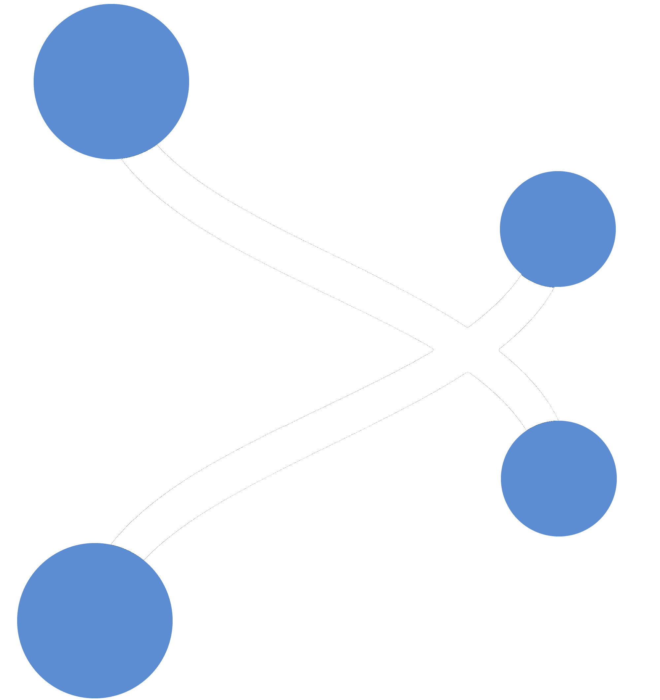
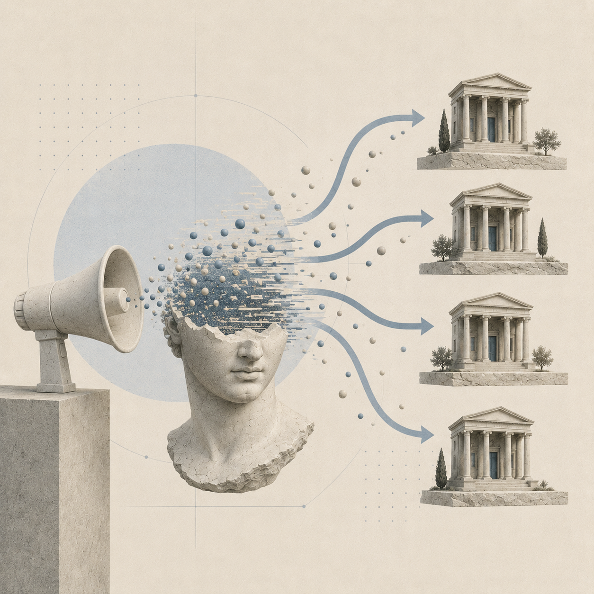
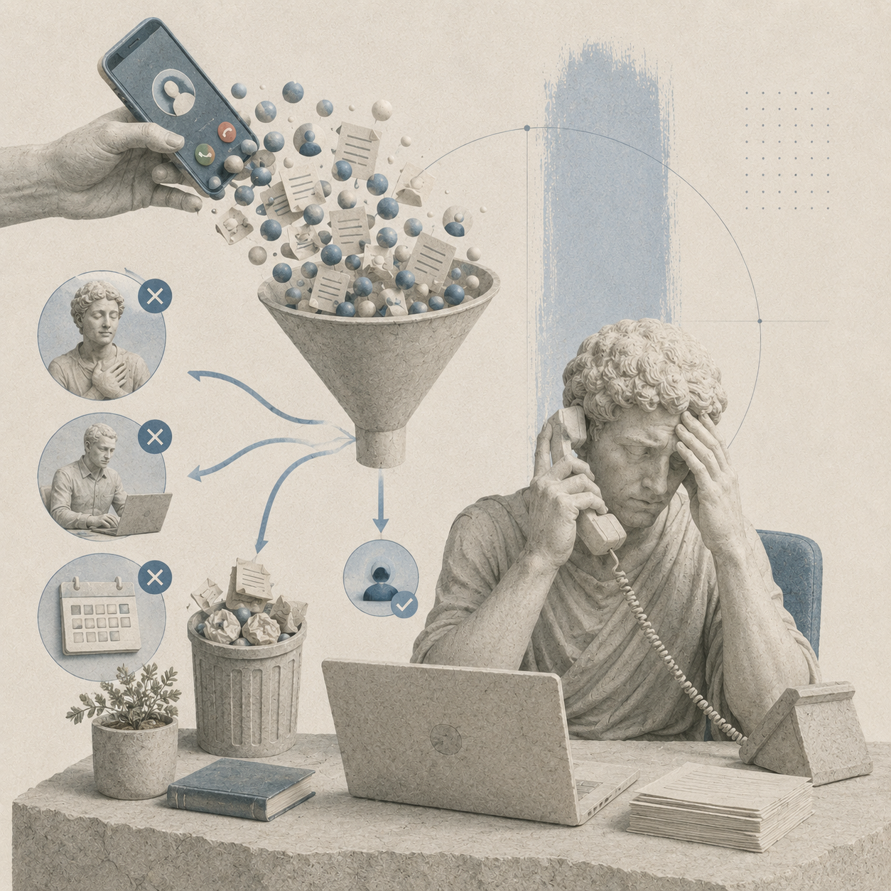
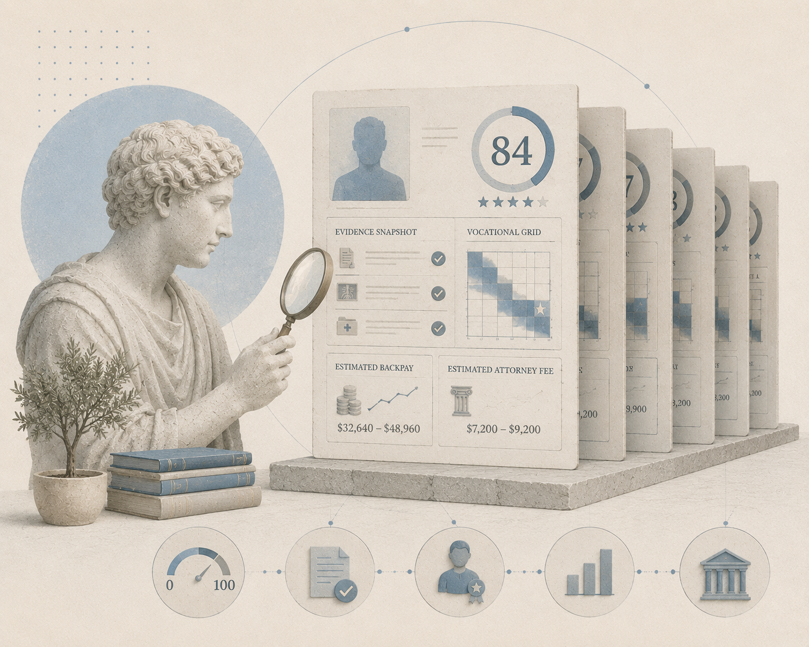
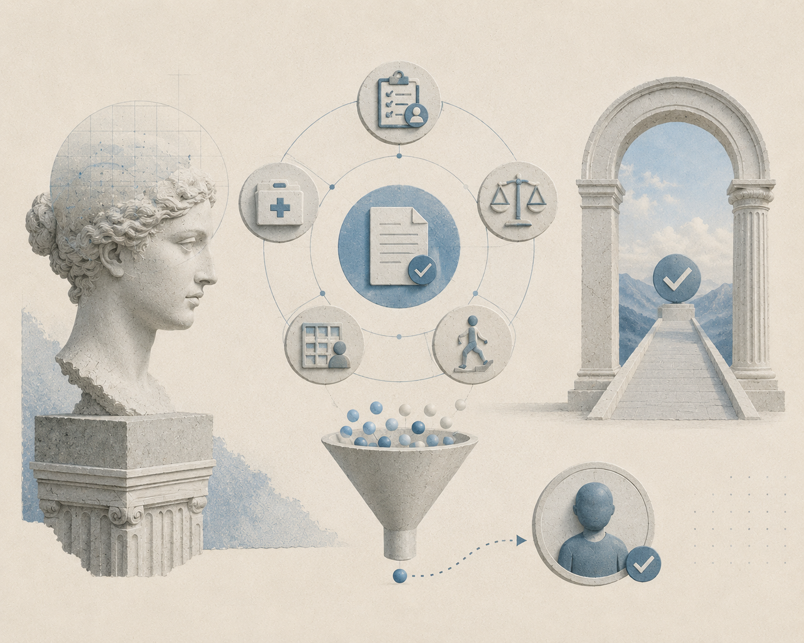
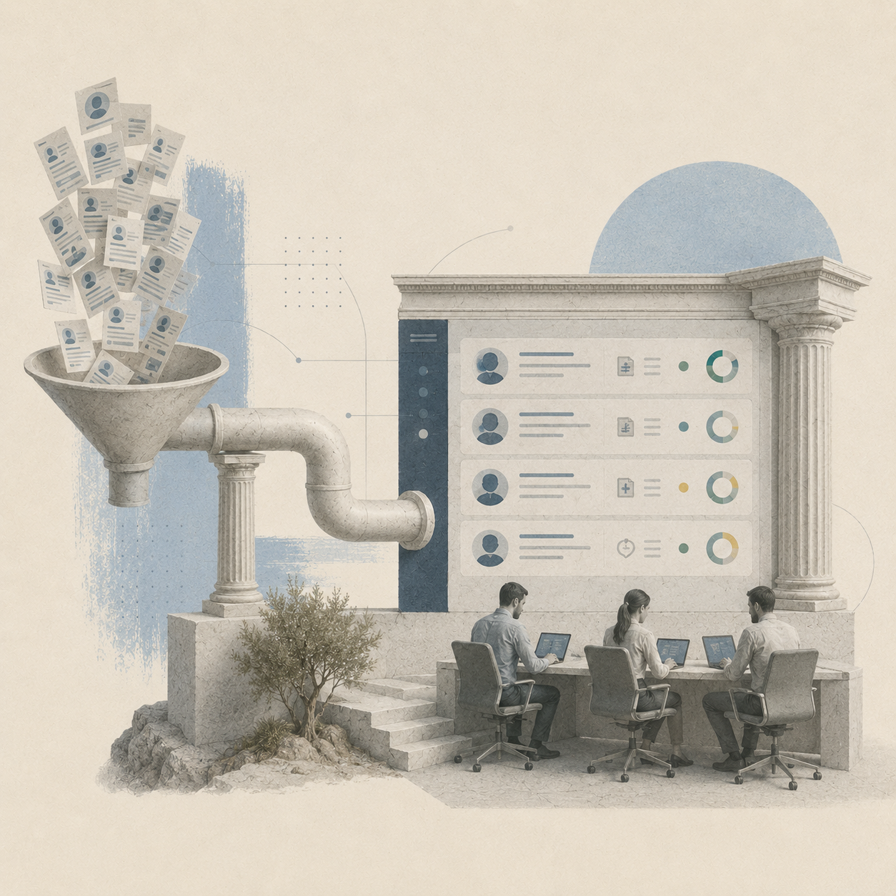

Case Helix delivers pre-scored, exclusive SSDI leads — evaluated against SSA's own criteria before they reach your intake team.

Most disability lead vendors charge per inquiry and call it qualified. The result is always the same: high volume, low signal, and a team that spends more time ruling people out than signing them up.

Shared leads go to 3–5 firms simultaneously. Speed-to-contact becomes the only differentiator — and winning the race still means a 10% sign rate. That's not a pipeline. That's a lottery.

Attorneys and paralegals field calls from people who are already approved, still working, or whose conditions don't meet the 12-month duration rule. That's not intake — that's overhead absorbed at attorney billing rates.
When case volume is unpredictable, every hiring decision, every budget call, every growth plan is a guess. Inconsistent lead quality isn't just a cost problem — it's a ceiling on everything downstream.
Most vendors know marketing. We know disability law — because one of us ran disability law firms, and the other survived the disability system himself.
Harvard Law. AmLaw 50. Founded and ran multiple disability law firms. Watched unstructured lead volume consume attorney hours, burn intake budgets, and produce cases that never signed. He knows exactly what a disability firm needs from a lead — because he spent years not getting it.
Cancer survivor. Personal SSDI claimant. Performance marketer. Built the acquisition infrastructure powering Case Helix's lead network. Brings claimant-side credibility no vendor in this category can match — he didn't study the system from the outside. He depended on it.
Not a gut check. A structured 100-point evaluation built directly from SSA's Sequential Evaluation Process — 20 CFR §404.1520. Only leads scoring 40+ who've requested contact are forwarded. Every lead is exclusive.

No contracts to start. No credit card required. A short fit conversation, a free trial batch, then leads flow in — scored, tagged, and CRM-ready.
Practice areas, geography, case stage preferences, CRM setup, and the evidence signals your firm weights most heavily. We configure your routing profile — a direct conversation with the founders, not a dropdown form.

Each profile includes a 0–100 score, evidence snapshot, vocational Grid analysis, estimated backpay, and estimated attorney fee. See exactly what you're getting before you spend a dollar.

Tagged by score band, condition, case stage, and evidence status. Your intake team reviews the profile — they already know what to ask before the first call. No sorting. No triage.
Every forwarded lead arrives as a structured brief — score, evidence status, vocational profile, verbatim functional statement, and attorney fee estimate. Delivered to your CRM the moment the evaluation completes.
Start with 10 scored profiles at no cost. No credit card, no contract. A direct line to the founders — no intake form, no sales queue.